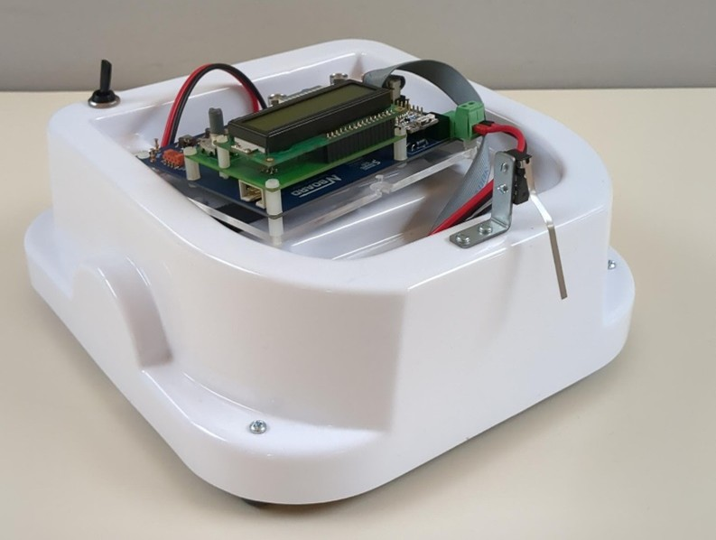
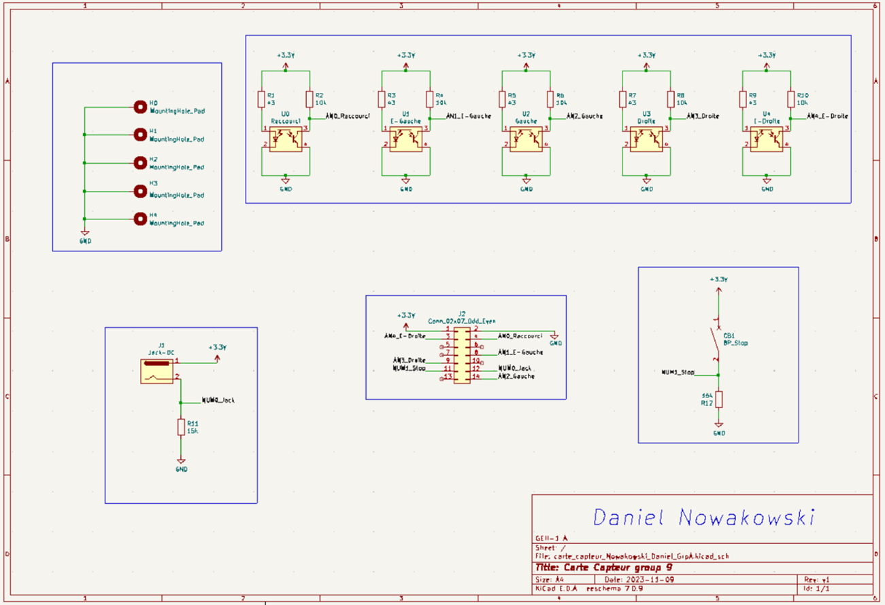
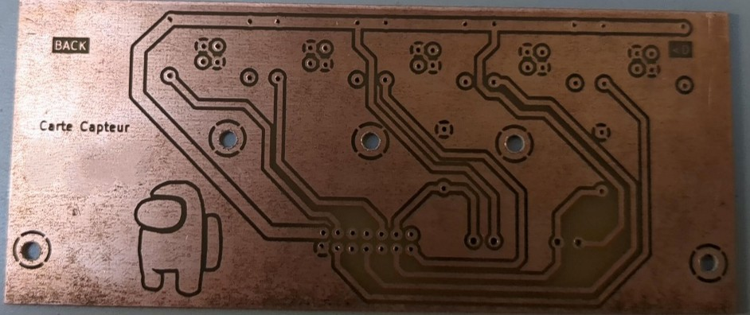
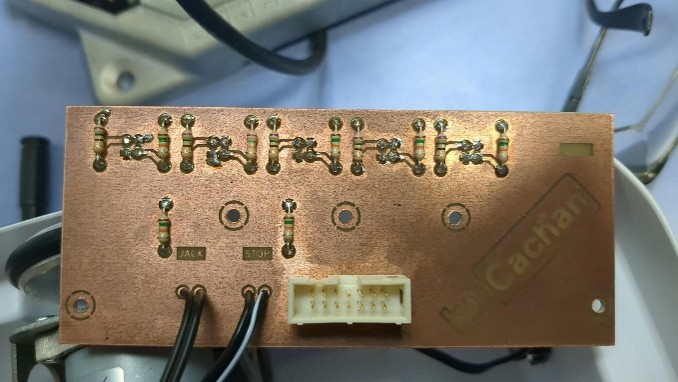
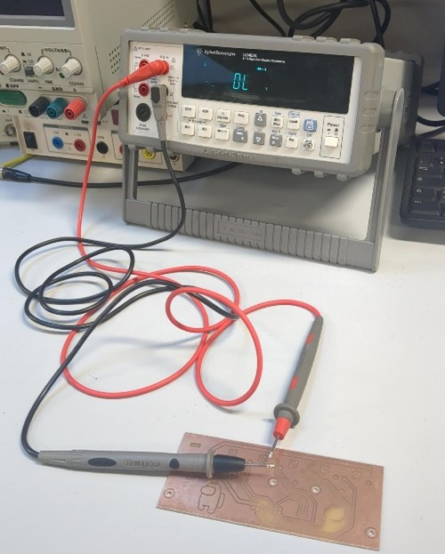
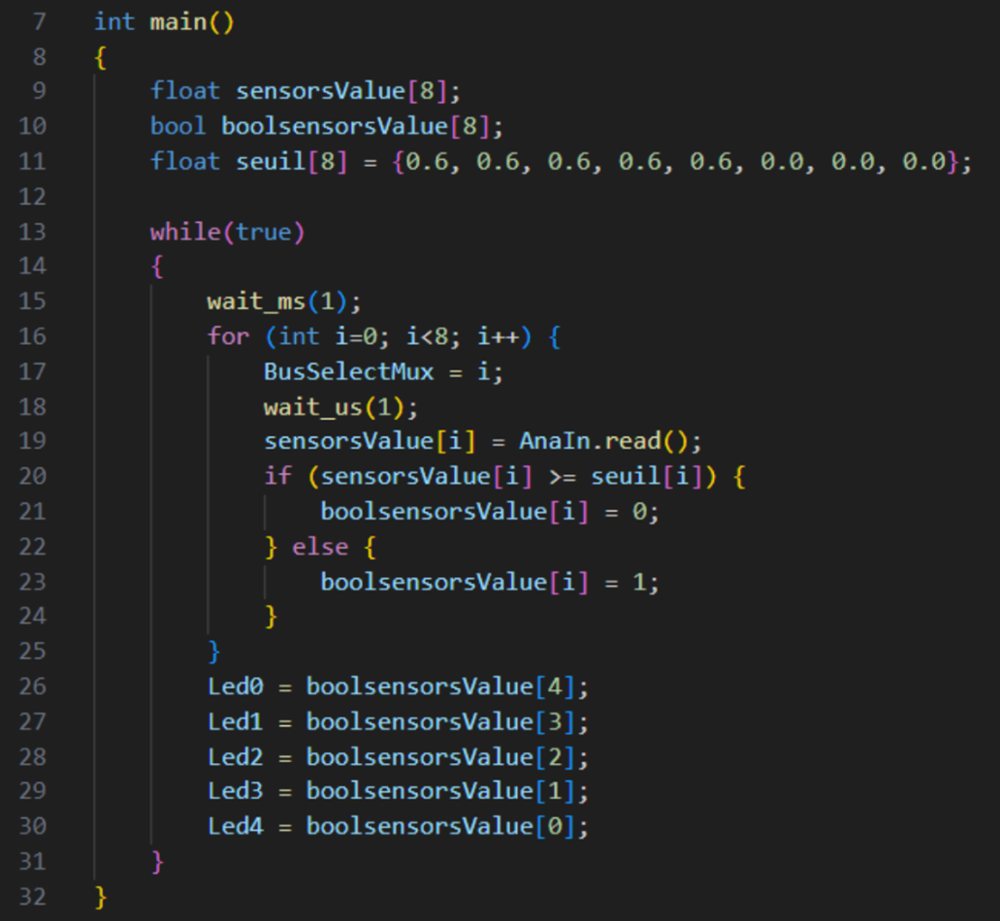
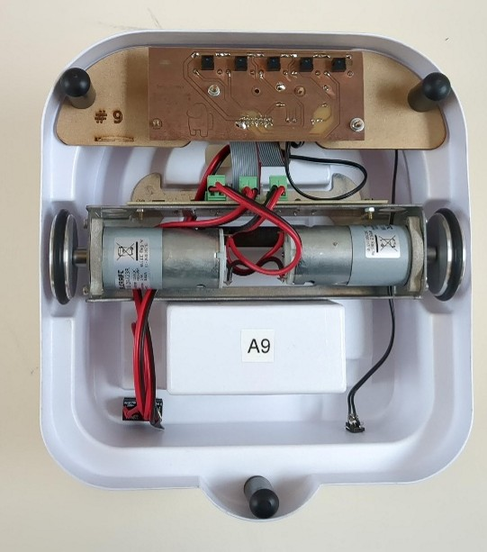

Gamel Trophy : Robot Suiveur de Ligne
Le projet Gamel Trophy consiste à concevoir un robot mobile autonome capable de suivre une ligne blanche sur un circuit complexe le plus rapidement possible. Dans ce projet, j'ai pris en charge l'intégralité de la chaîne de détection et la conception électronique de la carte capteurs.

1. Conception Électronique (KiCad)
Pour assurer un suivi précis, j'ai conçu une carte électronique personnalisée. Le travail a commencé par la saisie du schéma et s'est poursuivi par un routage optimisé.


2. Fabrication et Réalisation Hardware
Passer du virtuel au réel a nécessité une grande rigueur lors de la fabrication du PCB et de la phase de soudure des composants.


3. Tests, Débogage et Programmation
Une étape cruciale a été la validation du matériel par des tests de continuité et le développement du logiciel de traitement des signaux analogiques.
Réalisation de tests de continuité au multimètre pour vérifier l'absence de courts-circuits et validation de la sensibilité des capteurs avec un testeur dédié.


4. Intégration Finale
Le robot a été assemblé en intégrant la carte de propulsion (moteurs) et ma carte de détection dans le châssis, reliées par une nappe flexible.

Conclusion
Ce projet a été une expérience complète de conception de systèmes embarqués. J'ai pu maîtriser le cycle complet de création d'un produit électronique : du cahier des charges mécanique à la fabrication du PCB, jusqu'à l'optimisation logicielle.